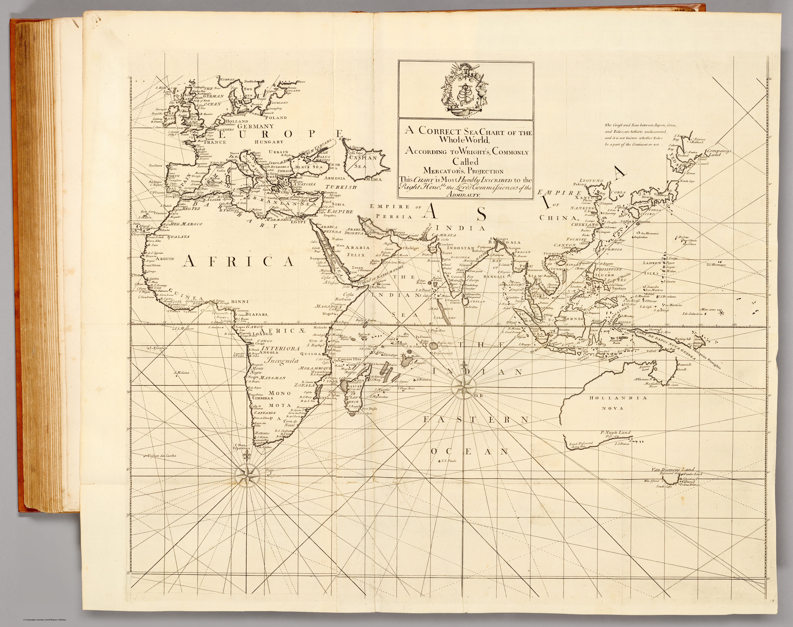

Click to enlargeA world sea-chart on Mercator's projection from the Atlas Maritimus & Commercialis of 1728 — the first openly published English atlas of trade and navigation. It frames the whole globe, India included, as a single navigable surface, and carries the borrowed imprimatur of Edmond Halley.
Authorship and object
From the Atlas Maritimus & Commercialis (London, 1728), the first commercial geography produced for a general English audience — a consortium work whose descriptive text owes much to Daniel Defoe, whose sailing directions were by Nathaniel Cutler, and whose charts were largely the work of John Senex and John Harris. This world chart spans plates 1–2 (joined), drawn "according to Wright's, commonly called Mercator's, projection."
The navigator's projection — and Halley's name
Mercator's projection, mathematically justified by Edward Wright, renders a constant compass bearing as a straight line — the projection a sailor needs. The atlas promoted it, alongside Henry Wilson's patented "globular projection" used for other sheets, as a practical aid to navigation, and Edmond Halley lent the enterprise his authority by writing the prefatory note justifying the projection. His name became so attached that the atlas is often catalogued under it, though his hand in the charts themselves was slight — a famous instance of borrowed scientific prestige.
The gaze
This is the ocean as the connective tissue of trade. India appears not as a country but as coastlines on a worldwide grid of rhumb lines — one set of shores among the global network of "coasts, ports, harbours and noted rivers" the atlas exists to serve. The gaze is that of the commercial navigator, for whom the subcontinent is a destination reached across a measurable, sailable sea.